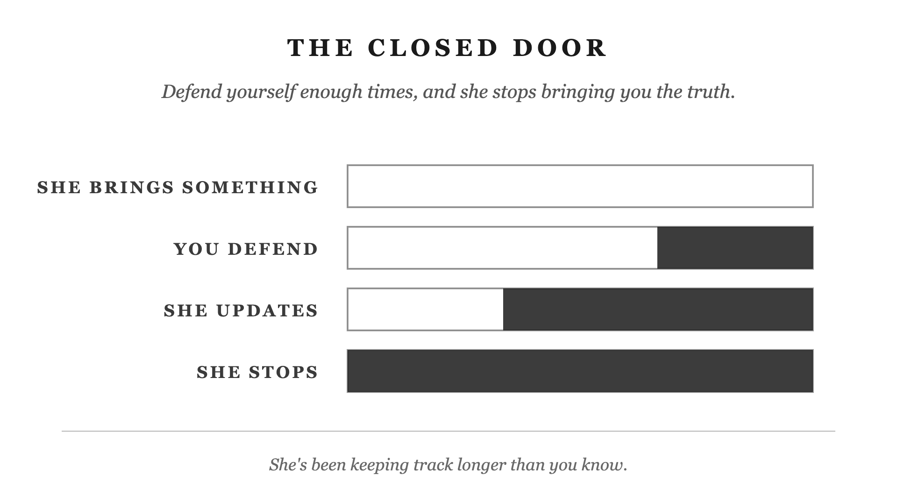

There’s a move you make when someone criticizes you. You didn’t choose it. You learned it.
She says something. Maybe it’s about your tone, or something you forgot, or a pattern she’s noticed three times this week. Before you’ve really heard it, you’re already building the response. Not because you’re angry. Just because that’s what you do. You’re setting the record straight. Making sure she understands the context. Why it happened the way it did. Why it isn’t quite as bad as it sounds.
You think you’re being honest.
She thinks it’s not worth bringing things to you.
There are four versions of this. You probably run at least two of them.
She says you’ve been distant lately. You immediately bring up how much you’ve been working, how much she’s been on her phone, how this is a two-way street. The intent is to show her the full picture. What it does is move the conversation into a courtroom. Now both of you are on trial.
She says you’ve seemed irritable. You say no, you haven’t. This feels honest, because you genuinely believe you weren’t. But in a marriage, most things aren’t empirical. “You were irritable” isn’t a fact she can prove. It’s an experience she had. What you haven’t learned to say is: I hear that you experienced it that way, and that wasn’t my intention. Instead, you treat her report as a claim to disprove. What you’ve done is told her that her experience of the house isn’t real. That’s a strange thing to teach someone you love.
She says the house is a mess. You say it’s not that bad. Now the argument isn’t about the house. It’s about the degree of messiness. That debate has no resolution. The original concern is buried.
She raises something about your behavior. You say: why are you so focused on me? You’ve moved responsibility from yourself to a target. She came in with a concern and left with a redirect.
In moderation, and at the right moment, each has a place. Denying something you genuinely didn’t do is reasonable. Asking for consistent treatment is reasonable. Noting that the delivery is out of proportion to the issue is reasonable. Defending yourself against an attack is reasonable.
The problem isn’t the response. It’s the pattern. When any of these becomes the automatic first move, it fires before she’s finished. It doesn’t matter what she’s actually bringing. It overrides what would make the conversation useful: curiosity, understanding, the capacity to hear. And all four share one common cost: they tell her that what she brought to you isn’t being received.
All four feel like honesty. None of them are listening.
She picked the time, chose to say it, and came to you with it. When she got the defensive response back, she registered it. Not consciously, not dramatically. She just updated her model of what it costs to bring things to you.
She does this enough times, and she stops.
Not the easy things. The easy things still come. What stops is the harder stuff. The things she’s been sitting with. The things that actually matter.
You notice she seems a little distant. Nothing happened. She’s fine. Just quieter than she used to be.
John Gottman spent decades in a research lab watching couples argue. His team could predict which marriages would survive, just from watching how two people fight. They did it with above 90 percent accuracy, from samples as short as three minutes. His work puts defensiveness alongside contempt, stonewalling, and criticism as the behaviors most likely to end a marriage. Not because any one episode is catastrophic. Because the pattern, repeated over years, teaches a partner that this isn’t a safe place to be honest. It doesn’t end with a fight. It ends with her stopping.
Seneca had a practice he called praemeditatio malorum. Pre-living the hard thing. The logic: what you have already considered cannot catch you unprepared.
He wrote that “it is the unexpected that puts the heaviest load upon us,” and a few lines later he gave the remedy: “Our minds should be sent forward in advance to meet all problems, and we should consider, not what is wont to happen, but what can happen.” (Epistulae Morales, Letter 91, trans. Gummere)
You can feel when something is simmering between you. Not a fight. Just a weight in the air. Two days quieter than usual. You know it needs a conversation. But not tonight. Not when you’re both tired. Not when the moment isn’t right.
The Stoic move isn’t to push through anyway. And it isn’t to ignore it and hope it resolves. It’s to make a deliberate choice: I’m going to come back to this when we’re both calmer. Then use the time between now and then.
Most men don’t. They wait, dreading it, without doing anything with that dread.
You use that window. You pre-live how the conversation might go. You feel the pull of the Four D’s in your imagination, before it’s real. You decide in advance what you’ll do when you feel that pull. So when the moment comes, you’re not caught off guard, driven back to the automatic pattern. You already made your choice.
You’ve thought it. Maybe just once, maybe more: she’s being irrational. The frustration doesn’t match the situation. The intensity seems like too much.
She isn’t.
Marcus Aurelius kept returning to this in Meditations. He wrote it in Book 11, about the people who do you wrong: “it is plain that they do so involuntarily and in ignorance. For as every soul is unwillingly deprived of the truth, so also is it unwillingly deprived of the power of behaving to each man according to his deserts.” (Meditations 11.18, Long trans.)
The people who frustrate you are not choosing irrationality. They’re doing what makes sense from where they stand. Their history, their read of what’s been building, their pattern of what they’ve observed. From their angle, it makes sense.
Your wife is not irrational. She’s working from a different set of observations than you. In some cases, a more accurate set. She has the outside view of your behavior. You don’t.
When you hold that frame, there is nothing to defend against. There is something to understand. That’s what makes listening feel like intelligence rather than surrender.
Some men hear this and overcorrect. They stop defending, but they also stop being honest. They agree with everything in the moment, never correct the record, and the resentment builds underground. That’s not the answer either.
You have a perspective, and you’re allowed to have one. The question is when and how you state it. Not in the heat of the moment, while she’s upset and you’re fighting your own pull toward the Four D’s. That’s the wrong time, and it always goes badly. Later works better: when things are calm, and the goal is to leave the conversation in a better place.
You say what you actually think: what didn’t sit right, what you believe is true about the marriage. You say it plainly, without performance, without needing her to validate it. This is the fourth virtue from Chapter 1: brave enough to stay engaged. Not brave enough to win the argument. Brave enough to say the real thing and leave it there.
You don’t need her to agree in the moment. Things said take time to sink in, and most have to be said more than once before they land. Her response in the next ten minutes isn’t the measure. You said what was true, and that’s enough. When you’ve learned this difference, you’re someone she can actually come to. Not because you always agree. Because she knows the door is open. That’s what she was looking for when she brought it to you in the first place.
The Four D’s are automatic. Absorbed before you had words for them, installed by watching. You didn’t design them. But you don’t have to run them.
What interrupts the automatic isn’t willpower in the moment. It’s preparation before it. You saw the conversation coming. You used the window. You already decided.
When she brings something to you tonight, the door is either open or it isn’t. She can tell. She’s been keeping track longer than you know.

Put it into practice
Mechanism: The Closed Door
Conversation sentence: Every time you defended yourself, you taught her the conversation wasn’t worth having.
The Four D’s (Defend, Deny, Downplay, Deflect) fire automatically before the man has really heard what his wife is saying; each one tells her that honesty costs more than it’s worth. Praemeditatio malorum, the Stoic practice of pre-living the difficult conversation before it arrives, is what breaks the automatic response: not willpower in the moment, preparation before it, so the door stays open.
Lesson: Seneca called this praemeditatio malorum: rehearsing a hard conversation in your head before it happens, so the real one doesn’t catch you flat-footed. The prep work happens earlier, not in the room.
Challenge: Getting criticized and immediately explaining, denying, minimizing, or redirecting doesn’t feel like defensiveness from the inside. It feels like setting the record straight. She experiences it as a door closing.